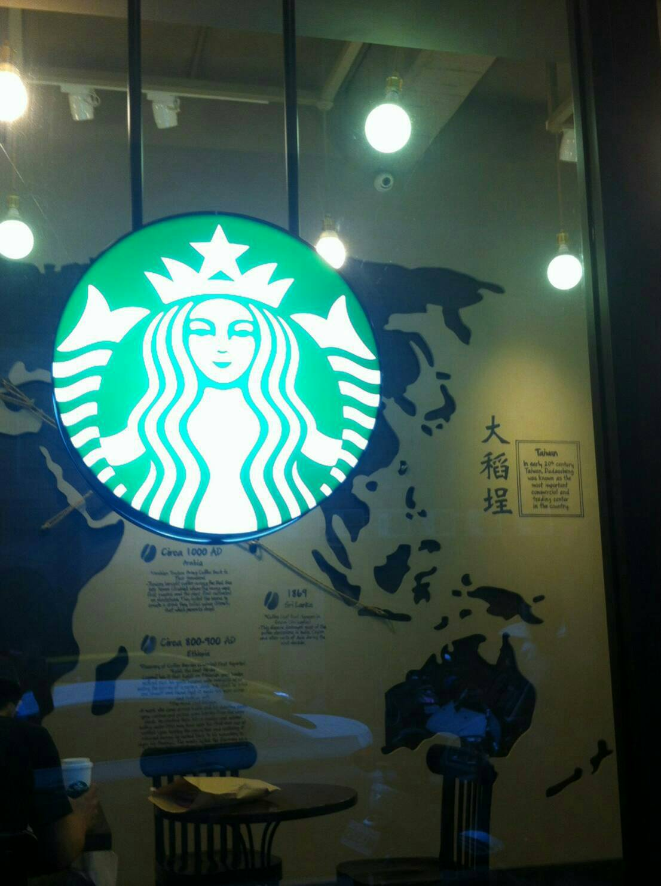
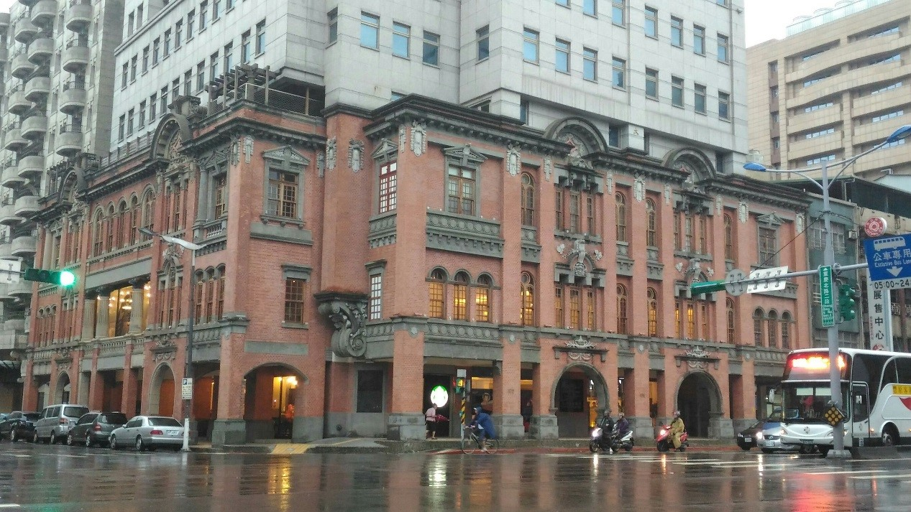

大稻埕星巴克
地理位置:
位於位於台北市重慶北路與保安街交叉口上，前身是「葉金塗古宅」
歷史:
1.建於西元1926年，由生產鳳梨罐頭致富的葉金塗所興建，人稱「鳳梨王」，商行名稱為「金泰享商行」，當時大稻埕的富商之一。
2.屋主葉金塗早逝，房子幾經轉租，歷經酒家、報社、醫院、商店及出版社變遷。最著名的是租給「新中華大酒樓」，是當時大稻埕最著名酒家之一。
3.一樓座位區的牆面顯示大稻埕在20世紀初期對於台灣發展的重要性，以及在世界地圖上點出咖啡產地、運輸路線及歷史等。而在吧台後方特別採取全牆面以商品陳列櫃呈現的復古概念，呼應星巴克美國早期店鋪設計及大稻埕1930年代茶館的陳列手法。

Copyright © 2017
ZoneTwelve
特色:
1.巴洛克式建築
2.保安門市融和了復古與現代貫穿室內設計
3.一樓牆面寫著大稻埕且點出其他地理位子和歷史地位
4.外觀上於三樓左右側都可看到一個”泰”字，是葉家金泰享的商標

大稻埕星巴克外部景觀